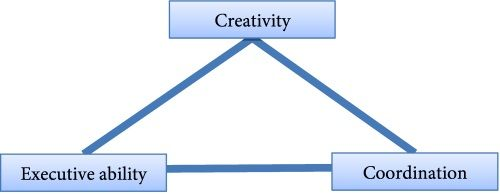
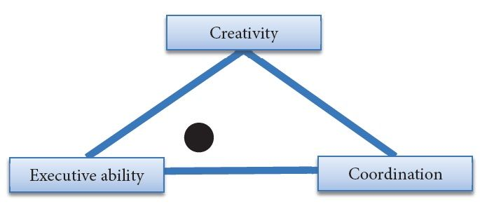
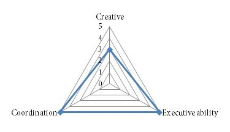
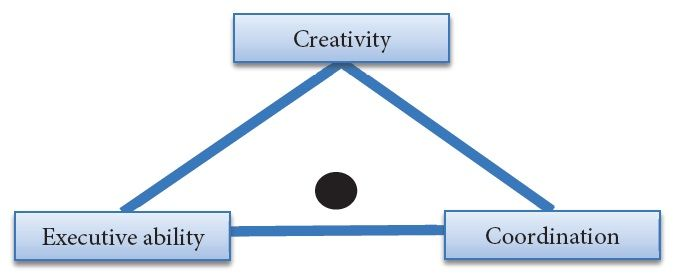

Answer
Look at this diagram. Where would you place yourself, and why?

Candidate pauses briefly and flashes a concerned “uh oh” look.
CANDIDATE: I would place myself here.
Candidate adds a dot near the middle of the graph:

CANDIDATE: I put myself there is for the following reasons:
| Example | |
|---|---|
| Executive ability | As an Apple product manager, I could really execute. I got a lot of stuff done in a short period of time. |
| Coordination | When I worked at HP, I was a great coordinator. I had great relationships. |
| Creativity | I am creative at work and at home. I compete in hackathons and have come up with lots of cool apps. |
INTERVIEWER: That doesn’t make any sense. Executive ability isn’t about execution.
CANDIDATE: Oh.
INTERVIEWER: Also, the dot is far away from coordination and creativity. So are you saying that you’re not creative and have bad coordination?
CANDIDATE: I’m not saying that. No one can be perfect at everything.
INTERVIEWER: You just agreed with my point. And your tone of voice is very defensive.
CANDIDATE: You’re right. I got a bit emotional about it. I apologize. Do you mind if I reset & start over?
INTERVIEW: Uh, okay.
CANDIDATE: All right, so I understand that you want to see where I rank along these labels. Do you mind if I ask a few clarifying questions?
INTERVIEWER: Sure.
CANDIDATE: I understand creativity, but I don’t understand the other two labels. Can you explain what you mean by coordination and executive ability?
INTERVIEWER: Executive ability refers to your ability to make difficult decisions and sway others to your vision or point of view. Coordination is a measure of your ability to get things done, which includes your perseverance.
CANDIDATE: You only want me to assess these three characteristics and not other strengths and weaknesses of mine?
INTERVIEWER: Correct.
CANDIDATE: Here’s my first observation about this exercise: I don’t think there are necessarily trade-offs between any of these three labels. That is, someone can be strong in creativity, executive ability and coordination, but this diagram doesn’t allow for this possibility.
INTERVIEWER: That’s an interesting observation. So how would you manage this?
CANDIDATE: It makes more sense to me to represent myself using a radar chart.
Candidate draws following on the whiteboard

CANDIDATE: I rate myself 5 out of 5 on executive ability and coordination and a three in creativity, and here’s why:
| Example | |
|---|---|
| Executive ability | As an Apple product manager, I had to make tough decisions. For example, back in 2009, I told Steve Jobs that we could not ship a fingerprint scanner on the iPhone. He said I wasn’t trying hard enough. I gave him the prototypes to try it himself, and he realized how unreliable the technology was. He backed off. |
| Coordination | When I worked at HP in 2012, I had to lead an effort that spanned three companies, five organizations, and 1200 people. |
| Creativity | I am creative at work, especially when coming up with solutions to customer complaints. Back in 2006, when I was a customer service rep, I closed 400 out of 450 customer complaints with a 5 star satisfaction rating. That was the highest score received for anyone at my level. |
INTERVIEWER: You make a good point, but I would like you to complete the original exercise using the original diagram, not the radar chart.
CANDIDATE: The best thing to do is to normalize the values on my radar chart and map it to your original diagram. Eyeballing the chart, I believe I would be equally strong on executive and coordination, but a little bit weaker on creativity.
Candidate draws the following:

INTERVIEWER: Okay, good.
Comments: This is a question that does not have a correct answer. Instead, it is meant to test your ability to think critically and recognize the flawed question, dissent with the interviewer and propose a constructive alternative.
The candidate started off poorly. He rushed into the question without thinking about the problem. The interviewer jammed him with the response, “so you’re not good at creativity and coordination?” From there, the candidate made her position worse by being defensive.
Typically a do-over is awkward and should only be reserved for the most hopeless of situations. In this case, the do-over illustrated how the candidate should have approached the question on the first pass. That is, he should have clarified the objective and question, raised his voice when he detected that the problem setup was amiss, and proposed a better way to solve it.
The candidate also demonstrated his willingness to be flexible by answering the original question setup, by normalizing his selected values, without giving ground.